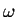

relclosure.l considers closure operators, concretely as monotone operators on the algebra of relations and predicates. The treatment follows Cohn, Universal Algebra, and was started by Rod and Savi, and put in this form by me. We have intersection closed families of relations, and pre-fixed and post-fixed points as special cases (although I think the language of today has these concepts the other way round: maybe I was just confused!), greatest and least such by intersection closure, proof that they are fixed points. For finitary operators, we also have Scott-Tarski: the least fixed point is reached in  many steps. The notion of finiteness here is given itself inductively as (the closure of) an intersection closed family. In this case we take the Kuratowski-Sierpinski definition of finite subset (generated by: empty subset, singleton and binary union), others should work too (but be careful, as we are working intuitionistically!). Joint fixed points, considered first by Andrews, which require commuting operators, are also discussed, and their extension to commuting families of operators. These are then illustrated, briefly, by showing that the reflexivity, symmetry and transitivity operators commute. By way of illustration, this allows us to compute the equivalence (reflexive-symmetric-transitive) closure of a relation R as the (transitive closure of the (symmetric closure of the (reflexive closure of R))), although this is not shown in full.
** Module lib_rel_closure Imports lib_more_induction lib_rel lib_nat_Le
intersectionRel = ... : {s|Type}{t|Type}(Pred (Rel s t))->Rel s t
unionRel = ... : {s|Type}{t|Type}(Pred (Rel s t))->Rel s t
intersectionPred = ... : {s|Type}(Pred (Pred s))->Pred s
unionPred = ... : {s|Type}(Pred (Pred s))->Pred s
intersectionRelI = ... :
{s|Type}{t|Type}{F|Pred (Rel s t)}{R:Rel s t}
({S:Rel s t}(F S)->SubRel R S)->SubRel R (intersectionRel F)
intersectionRelE = ... :
{s|Type}{t|Type}{F|Pred (Rel s t)}{R:Rel s t}(F R)->
SubRel (intersectionRel F) R
unionRelI = ... :
{s|Type}{t|Type}{F|Pred (Rel s t)}{R:Rel s t}(F R)->
SubRel R (unionRel F)
unionRelE = ... :
{s|Type}{t|Type}{F|Pred (Rel s t)}{R:Rel s t}
({S:Rel s t}(F S)->SubRel S R)->SubRel (unionRel F) R
intersectionPredI = ... :
{s|Type}{G|Pred (Pred s)}{P:Pred s}({Q:Pred s}(G Q)->SubPred P Q)->
SubPred P (intersectionPred G)
intersectionPredE = ... :
{s|Type}{G|Pred (Pred s)}{P:Pred s}(G P)->
SubPred (intersectionPred G) P
unionPredI = ... :
{s|Type}{G|Pred (Pred s)}{P:Pred s}(G P)->SubPred P (unionPred G)
unionPredE = ... :
{s|Type}{G|Pred (Pred s)}{P:Pred s}({Q:Pred s}(G Q)->SubPred Q P)->
SubPred (unionPred G) P
intReversesSubRel = ... :
{s|Type}{t|Type}{E,F|Pred (Rel s t)}(SubPred E F)->
SubRel (intersectionRel F) (intersectionRel E)
unionPreservesSubRel = ... :
{s|Type}{t|Type}{E,F|Pred (Rel s t)}(SubPred E F)->
SubRel (unionRel E) (unionRel F)
intReversesSubPred = ... :
{s|Type}{G,H|Pred (Pred s)}(SubPred G H)->
SubPred (intersectionPred H) (intersectionPred G)
unionPreservesSubPred = ... :
{s|Type}{G,H|Pred (Pred s)}(SubPred G H)->
SubPred (unionPred G) (unionPred H)
IntersectionClosed = ... : {s|Type}{t|Type}(Pred (Rel s t))->Prop
UnionClosed = ... : {s|Type}{t|Type}(Pred (Rel s t))->Prop
intFhasF = ... :
{s|Type}{t|Type}{F:Pred (Rel s t)}(IntersectionClosed F)->
F (intersectionRel F)
unionFhasF = ... :
{s|Type}{t|Type}{F:Pred (Rel s t)}(UnionClosed F)->F (unionRel F)
iclAnd = ... :
{s|Type}{t|Type}{F:Pred (Rel s t)}(IntersectionClosed F)->
{G:Pred (Rel s t)}(IntersectionClosed G)->
IntersectionClosed (andPred F G)
uclAnd = ... :
{s|Type}{t|Type}{F:Pred (Rel s t)}(UnionClosed F)->
{G:Pred (Rel s t)}(UnionClosed G)->UnionClosed (andPred F G)
iclRefl = ... : {s|Type}IntersectionClosed (refl|s)
iclSym = ... : {s|Type}IntersectionClosed (sym|s)
iclTrans = ... : {s|Type}IntersectionClosed (trans|s)
iclPreorder = ... : {s|Type}IntersectionClosed (preorder|s)
iclPer = ... : {s|Type}IntersectionClosed (per|s)
iclEquiv = ... : {s|Type}IntersectionClosed (equiv|s)
uclSym = ... : {s|Type}UnionClosed (sym|s)
closure = ... : {s|Type}{t|Type}(Pred (Rel s t))->(Rel s t)->Rel s t
iclSubRelR = ... :
{s|Type}{t|Type}{R|Rel s t}IntersectionClosed (SubRel R)
Rbounds = ... : {s|Type}{t|Type}(Rel s t)->(Rel s t)->Prop
uclRbounds = ... :
{s|Type}{t|Type}{R|Rel s t}UnionClosed (Rbounds|s|t|R)
closureInc = ... :
{s|Type}{t|Type}{F:Pred (Rel s t)}{R|Rel s t}SubRel R (closure F R)
closureI = ... :
{s|Type}{t|Type}{F:Pred (Rel s t)}(IntersectionClosed F)->
{R|Rel s t}F (closure F R)
closureE = ... :
{s|Type}{t|Type}{F:Pred (Rel s t)}{R,S|Rel s t}(F S)->(SubRel R S)->
SubRel (closure F R) S
closureEderived = ... :
{s|Type}{t|Type}{F:Pred (Rel s t)}{R,S|Rel s t}
(F (andRel (closure F R) S))->(SubRel R S)->SubRel (closure F R) S
PreFix = ... : {s|Type}{t|Type}((Rel s t)->Rel s t)->(Rel s t)->Prop
PostFix = ... : {s|Type}{t|Type}((Rel s t)->Rel s t)->(Rel s t)->Prop
Fix = ... : {s|Type}{t|Type}((Rel s t)->Rel s t)->(Rel s t)->Prop
Increasing = ... : {s|Type}{t|Type}((Rel s t)->Rel s t)->Prop
Idempotent = ... : {s|Type}{t|Type}((Rel s t)->Rel s t)->Prop
Monotone = ... : {s|Type}{t|Type}((Rel s t)->Rel s t)->Prop
Closure = ... : {s|Type}{t|Type}((Rel s t)->Rel s t)->Prop
pfp0 = ... :
{s|Type}{t|Type}{phi:(Rel s t)->Rel s t}PreFix phi (emptyRel|s|t)
pfp1 = ... :
{s|Type}{t|Type}{phi:(Rel s t)->Rel s t}PostFix phi (univRel|s|t)
iclPostFix = ... :
{s|Type}{t|Type}{phi:(Rel s t)->Rel s t}(Monotone phi)->
IntersectionClosed (PostFix phi)
uclPreFix = ... :
{s|Type}{t|Type}{phi:(Rel s t)->Rel s t}(Monotone phi)->
UnionClosed (PreFix phi)
closureClosure = ... :
{s|Type}{t|Type}{F:Pred (Rel s t)}(IntersectionClosed F)->
Closure (closure F)
leastFixPoint = ... : {s|Type}{t|Type}((Rel s t)->Rel s t)->Rel s t
lfplemma = ... :
{s|Type}{t|Type}{phi:(Rel s t)->Rel s t}(Monotone phi)->
Fix phi (leastFixPoint phi)
phipower = ... :
{s|Type}{t|Type}((Rel s t)->Rel s t)->nat->(Rel s t)->Rel s t
phipower0 = ... : {s|Type}{t|Type}((Rel s t)->Rel s t)->nat->Rel s t
phipower1 = ... :
{s|Type}{t|Type}{phi:(Rel s t)->Rel s t}(Monotone phi)->{R|Rel s t}
{k|nat}(PreFix phi R)->PreFix phi (phipower phi k R)
phipower2 = ... :
{s|Type}{t|Type}{phi:(Rel s t)->Rel s t}(Monotone phi)->{m|nat}
PreFix phi (phipower0 phi m)
phipower3 = ... :
{s|Type}{t|Type}{phi:(Rel s t)->Rel s t}(Monotone phi)->{m,k|nat}
SubRel (phipower0 phi m) (phipower0 phi (plus k m))
phipower4 = ... :
{s|Type}{t|Type}{phi:(Rel s t)->Rel s t}(Monotone phi)->{m,k|nat}
SubRel (phipower phi k (phipower0 phi m)) (phipower0 phi (plus k m))
phipowersincrease = ... :
{s|Type}{t|Type}{phi:(Rel s t)->Rel s t}(Monotone phi)->{m,n|nat}
(Le m n)->SubRel (phipower0 phi m) (phipower0 phi n)
leastPreFixPoint = ... : {s|Type}{t|Type}((Rel s t)->Rel s t)->Rel s t
lpfplemma1 = ... :
{s|Type}{t|Type}{phi:(Rel s t)->Rel s t}{n|nat}
SubRel (phipower0 phi n) (leastPreFixPoint phi)
lpfplemma = ... :
{s|Type}{t|Type}{phi:(Rel s t)->Rel s t}(Monotone phi)->
PreFix phi (leastPreFixPoint phi)
lfplemma1 = ... :
{s|Type}{t|Type}{phi:(Rel s t)->Rel s t}(Monotone phi)->{n|nat}
SubRel (phipower0 phi n) (leastFixPoint phi)
ScottTarski1 = ... :
{s|Type}{t|Type}{phi:(Rel s t)->Rel s t}(Monotone phi)->
SubRel (leastPreFixPoint phi) (leastFixPoint phi)
singletonPred = ... : {s|Type}s->Pred s
singletonRel = ... : {s|Type}{t|Type}s->t->Rel s t
finitePred = ... : {s|Type}Pred (Pred s)
finiteRel = ... : {s|Type}{t|Type}Pred (Rel s t)
finitephipowersbound = ... :
{s|Type}{t|Type}{phi:(Rel s t)->Rel s t}(Monotone phi)->{Xf|Rel s t}
(finiteRel Xf)->(SubRel Xf (leastPreFixPoint phi))->
Ex ([n:nat]SubRel Xf (phipower0 phi n))
Algebraic = ... : {s|Type}{t|Type}((Rel s t)->Rel s t)->Prop
ScottTarski2 = ... :
{s|Type}{t|Type}{phi:(Rel s t)->Rel s t}(Monotone phi)->
(Algebraic phi)->SubRel (leastFixPoint phi) (leastPreFixPoint phi)
ScottTarski = ... :
{s|Type}{t|Type}{phi:(Rel s t)->Rel s t}(Monotone phi)->
(Algebraic phi)->Fix phi (leastPreFixPoint phi)
F2 = ... :
{s|Type}{t|Type}((Rel s t)->Rel s t)->((Rel s t)->Rel s t)->
Pred (Rel s t)
icl2 = ... :
{s|Type}{t|Type}{phi:(Rel s t)->Rel s t}(Monotone phi)->
{psi:(Rel s t)->Rel s t}(Monotone psi)->
IntersectionClosed (F2 phi psi)
int2 = ... :
{s|Type}{t|Type}((Rel s t)->Rel s t)->((Rel s t)->Rel s t)->Rel s t
jointpostfixpoint2 = ... :
{s|Type}{t|Type}{phi:(Rel s t)->Rel s t}(Monotone phi)->
{psi:(Rel s t)->Rel s t}(Monotone psi)->
(PostFix phi (int2 phi psi) /\ PostFix psi (int2 phi psi))
Commphipsi = ... :
{s|Type}{t|Type}((Rel s t)->Rel s t)->((Rel s t)->Rel s t)->
(Rel s t)->Prop
jointprefixpoint2 = ... :
{s|Type}{t|Type}{phi:(Rel s t)->Rel s t}(Monotone phi)->
{psi:(Rel s t)->Rel s t}(Monotone psi)->
(Commphipsi phi psi (int2 phi psi))->
(PreFix phi (int2 phi psi) /\ PreFix psi (int2 phi psi))
Ffamily = ... :
{s|Type}{t|Type}{u|Type}(u->(Rel s t)->Rel s t)->(Rel s t)->Prop
iclfamily = ... :
{s|Type}{t|Type}{u|Type}{phifamily:u->(Rel s t)->Rel s t}
({z:u}Monotone (phifamily z))->
IntersectionClosed (Ffamily phifamily)
intfamily = ... :
{s|Type}{t|Type}{u|Type}(u->(Rel s t)->Rel s t)->Rel s t
jointpostfixpoint = ... :
{s|Type}{t|Type}{u|Type}{phifamily:u->(Rel s t)->Rel s t}
({z:u}Monotone (phifamily z))->{z:u}
PostFix (phifamily z) (intfamily phifamily)
Commfamily = ... :
{s|Type}{t|Type}{u|Type}(u->(Rel s t)->Rel s t)->(Rel s t)->Prop
jointprefixpoint = ... :
{s|Type}{t|Type}{u|Type}{phifamily:u->(Rel s t)->Rel s t}
({z:u}Monotone (phifamily z))->
(Commfamily phifamily (intfamily phifamily))->{z:u}
PreFix (phifamily z) (intfamily phifamily)
reflop = ... : {s|Type}(Rel s s)->s->s->Prop
symop = ... : {s|Type}(Rel s s)->Rel s s
transop = ... : {s|Type}(Rel s s)->Rel s s
reflopMono = ... : {s|Type}Monotone (reflop|s)
symopMono = ... : {s|Type}Monotone (symop|s)
transopMono = ... : {s|Type}Monotone (transop|s)
commreflsym = ... :
{s|Type}{R:Rel s s}Commphipsi (reflop|s) (symop|s) R
commsymtrans = ... :
{s|Type}{R:Rel s s}Commphipsi (symop|s) (transop|s) R
commtransrefl = ... :
{s|Type}{R:Rel s s}Commphipsi (transop|s) (reflop|s) R
Refl = ... : {s|Type}(Rel s s)->Prop
Sym = ... : {s|Type}(Rel s s)->Prop
Trans = ... : {s|Type}(Rel s s)->Prop